高级机器学习部分笔记
chap12
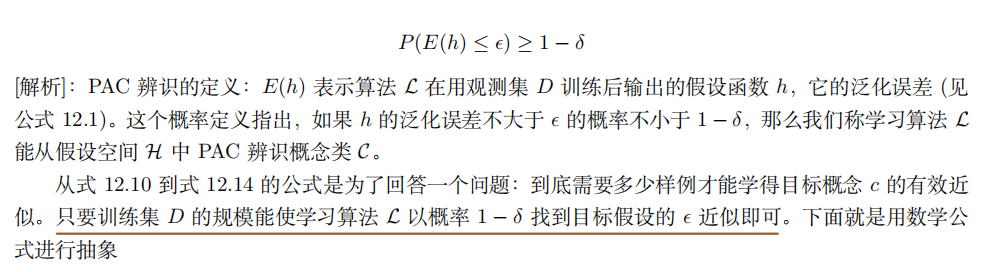
- 可分情况 经验误差为0
chap13 半监督学习
-
主动学习：使用尽量少的查询来获得尽量好的性能，引入了额外的专家知识
-
半监督学习：学习器不依赖外界交互、自动地利用未标记样本来提升学习性能
-
利用未标记样本，假设数据分布：聚类假设（同一个聚类中有相似的输出值）；流行假设（流行结构上邻近的样本有相似输出值） **本质：**相似的样本有相似的输出
-
半监督学习：纯半监督学习（未标记样本≠待预测数据）；直推学习（未标记样本=待预测数据）
生成式方法
- 生成式方法：假设数据由一个潜在模型生成.
- 方法：基于EM的极大似然估计
- 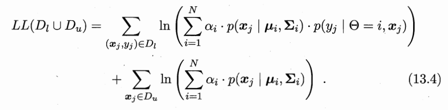
- 关键：模型假设必须正确
半监督SVM
- 半监督SVM
- 基本假设：低密度分割
- 找到能分开两类标记样本，且穿过数据低密度区域的划分超平面
图半监督学习
- 标签传播算法
- 当 越相似， 指数级变大，最小化能量函数能使 越相近。因此算法倾向于使得：距离较近的样本具有相近的输出 。
- 矩阵求逆开销大，改成迭代
- 图半监督学习缺点：存储开销大；引入新样本时要重新传播
- W：亲和矩阵，基于高斯函数定义
- D：对角矩阵
- ：标记传播矩阵
- 迭代计算式：
基于分歧的方法
-
代表：协同训练；最初针对多视图数据
-
每轮学习中都考察分类器在所有未标记样本上的分类置信度，有很大的计算开销。因此使用未标记样本缓冲池。
-
缓冲池是两个视图各一个
（？其实样本还是那些样本，只是属性被拆开了） -
用视图1对未标记样本标记
- 利用多视图的相容互补性，假设两个视图充分且条件独立
- 充分：每个视图都足以产生最优学习器的信息
- 条件独立：在给定类别标记条件下，两个视图独立
半监督聚类
- 两种监督信息：① 必连，勿连；② 少量有标记样本
- 约束k均值算法：第一类监督信息
- 约束种子k均值算法：第二类监督信息。
概率图模型
-
Y：关心的变量集合；O：可观测变量集合；R：其他变量集合
-
生成式模型：计算联合分布
-
判别式模型：计算条件分布
-
推断：用已知变量推测未知变量的条件分布。由 得到条件概率分布
-
概率图模型
- 贝叶斯网（有向无环图）：隐马尔科夫模型HMM（生成式）
- 马尔可夫网（无向图）：马尔可夫随机场MRF（生成式），条件随机场（判别式）
-
贝叶斯网：同父结构，给了父结点，子节点条件独立
隐马尔科夫模型
-
HMM是关于时序的概率模型，描述由一个隐藏的马尔可夫链随机生成不可观测的状态随机序列，再由各个状态生成一个观测而产生观测随机序列的过程（生成模型）
-
状态变量y、观测变量x。下标都是t
-
三组参数：状态转移概率 ；输出观测概率 ；初始状态概率
-

-
联合概率分布：
- 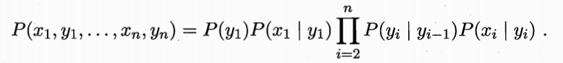
-
HMM基本问题，给定模型参数 ，观测序列
- 评估模型和观测序列之间的匹配程度（产生概率）：
- 根据观测序列推测隐藏的模型状态
- 参数学习：调整参数 使序列出现的概率最大
马尔可夫随机场
-
每个结点是一个/一组变量
-
**团 ** clique：图中结点的一个子集，如果其中任意两个结点之间都有边连接，则称该结点子集为一个团。团中的变量集合记为
-
因子（势函数）：定义在**随机变量子集（团）**上的非负实函数 / 概率分布函数。用于将联合概率分布分解
-
表示某个团， 表示团的集合， 表示团中的变量集合， 表示与团 对应的势函数
-
联合概率：
其中 是规范化因子
- 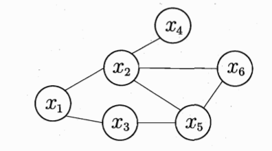
-
基于极大团：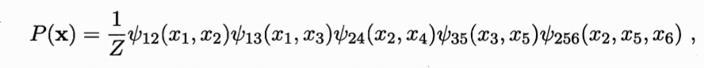
-
分离集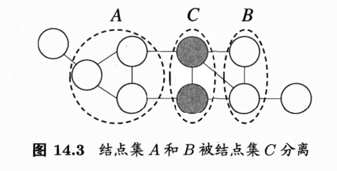
-
全局马尔科夫性：给定两个变量子集的分离集，则这两个变量子集条件独立 （证明）
-
局部马尔可夫性：给定某变量的邻接变量
-
成对马尔可夫性：给定所有其他变量，两个非邻接变量条件独立
条件随机场
-
CRF 判别式无向图 判别式 （隐马尔科夫模型和马尔科夫随机场都是生成式）
-
条件随机场和马尔可夫随机场均使用团上的势函数定义概率。
-
条件随机场处理的是条件概率；马尔科夫随机场处理的是联合概率
学习与推断
-
参数估计可以用极大似然估计/最大后验；也可以当成待推断的变量 吸收到推断问题中
-
变量集 ， 是不相交的变量集。
-
推断问题的目标：计算边际概率 ，或条件概率
-
概率图模型的推断方法：
-
精确推断：
- 变量消去
- 信念传播（两个步骤完成消息传递，进而计算边际分布）
- 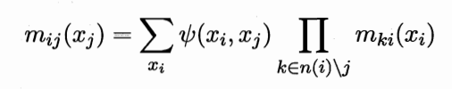
- 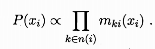
-
近似推断
- 采样
- MCMC采样（代表：MH，Gibbs）
- 变分推断
- 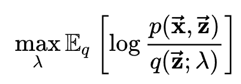
- 采样
P386
首先我认为epsilon是一个很小的值，因此在贪心策略产生的动作同时符合原始策略时，值为1比1-epsilon+epsilon/N，不符合时为0比epsilon/N，此时若取epsilon为0.1，N为10，那么第一个值为1比0.91，第二个值为0比0.01，实际上根据假设我们考虑的是两个分布在同一点处取值的概率比，因此虽然原始策略不会取不符合条件的动作，但是我们可以把概率设为一个较小的值，如0.01，那么这个值既远小于epsilon即0.1，所以提升该概率产生的影响其实很小（因为第一项变为0.99比0.91，变化很小），同时使得第二值从0修正为1，让计算可以进行下去。
https://www.zhihu.com/question/279690295
蒙特卡洛方法相比动态规划方法是有一些优势的。首先，蒙特卡洛方法适用于环境未知的情况，而动态规划是有模型的方法。 蒙特卡洛方法只需要更新一条轨迹的状态，而动态规划方法需要更新所有的状态。状态数量很多的时候（比如100万个、200万个），我们使用动态规划方法进行迭代，速度是非常慢的。这也是基于采样的蒙特卡洛方法相对于动态规划方法的优势。
动态规划：用上一步的别人更新这一步的自己；
蒙特卡洛：自己更新自己？
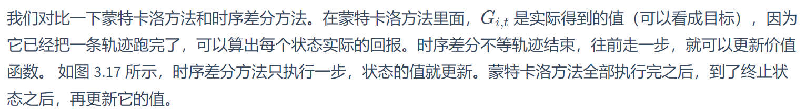 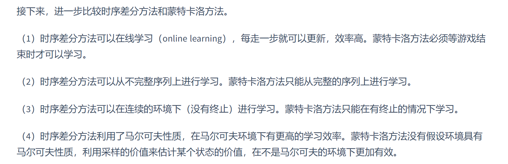https://datawhalechina.github.io/easy-rl/#/chapter3/chapter3?id=_331-蒙特卡洛策略评估
记不下的point：
P268 学习算法 的假设空间不是1.3节所讨论的学习任务本身对应的假设空间
P269 第三段 为什么尽可能接近 存在等效假设/采样有偶然性
P286 最小化经验误差和最小化经验损失有时并不相同
P319 预测和由果溯因都是推断
P321 三个基本问题
P325 某变量的所有邻接变量组成的集合称该变量的马尔可夫毯
P325 生成式模型对联合概率建模，判别式模型对条件分布建模
P347 数理逻辑中“文字”专指原子公式（atom）及其否定
P348 原子公式 原子命题
P351 规则生成过程设计一个评估规则优劣的标准，如先考虑规则准确率，准确率相同时考虑覆盖样例数
P352 LRS越大，差别越大；越小，可能是偶然发现
P352 训练集：生长集；验证集：剪枝集
P355 由原样本属性转化的原子公式称”背景知识”，如“色泽更深”;由样本类别转化的原子公式称”关系数据样例”，如“更好”.
P356 上面 一阶学习比命题规则学习更易引入领域知识，在命题规则学习乃至一般统计学习中，欲引入领域知识，通常有两种做法：在现有属性的基础上基于领域知识构造出新属性，或基于领域知识设计某种函数机制（例如正则化）来对假设空间加以约束.
P359 例子
P359 在归纳逻辑程序设计中，获得LGG后，可将其看作单条规则加入规则集，最后再用前几节介绍的技术进一步优化，例如对规则集进行后剪枝等
规则学习可解释性好.
P293 主动学习 如基于Dl训练一个SVM，挑选距离分类超平面最近的未标记样本进行查询
P298 S3VM：假设低密度分隔，这是聚类假设在考虑了线性超平面划分后的推广
P301 看https://www.bookstack.cn/read/huaxiaozhuan-ai/spilt.3.eb2790e77869bf63.md
P304 接受新样本，或将其加入原数据集对图重新重构并重新标记传播，或引入额外预测机制，如将 和经标记传播后得到标记的 合并作为训练集，另外训练一个学习器例如支持向量机来对新样本预测
P305 利用未标记数据：首先在每个视图上基于有标记样本分别训练出一个分类器，然后让每个分类器分别去挑选自己“最有把握的”未标记样本赋予伪标记，并将伪标记样本提供给另一个分类器作为新增的有标记样本用于训练更新。
P305 视图的条件独立性在现实任务中常难满足，如电影画面与声音显然不会是条件独立的
-
更一般的安全半监督学习仍然是未决的难题。
安全是指：利用未标记样本后，能确保返回性能至少不差于仅利用有标记样本。
有几张图要根据勘误gai
期望推断https://seline02.github.io/2022/08/10/%E5%8F%98%E5%88%86%E6%8E%A8%E6%96%AD/
P158
P359例子
15章还没看完 PPT图
图16.1